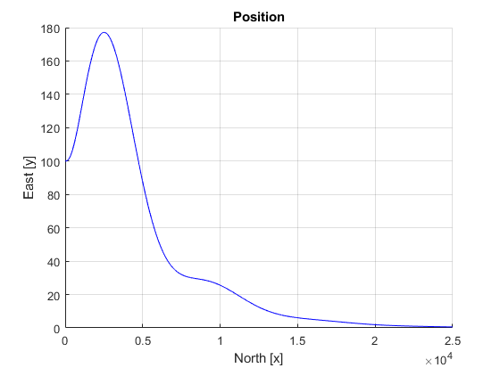
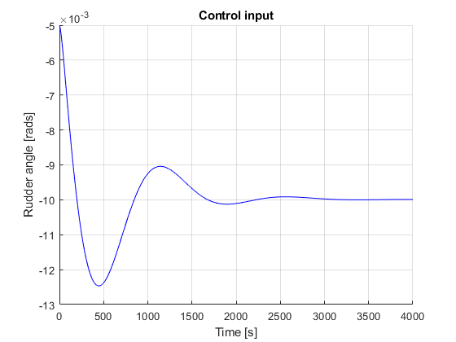
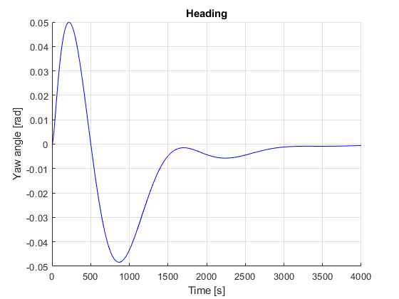
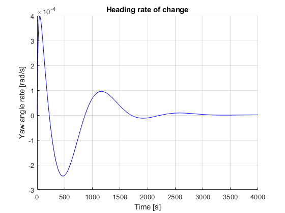

Contents
2. order Nomoto constant bearing
clear;
Parameters
U = 5;
T = 20;
K = 0.1;
b = 0.001;
rudder_sat = 0.035;
k_p = 5e-5;
k_i = 5e-8;
k_d = 1e-2;
h = 0.01;
sim_time = 5000;
N = sim_time/h;
Simulation loop
x_0 = 0;
y_0 = 100;
psi_0 = 0;
r_0 = 0;
x = zeros(1, N); x(1) = x_0;
y = zeros(1, N); y(1) = y_0;
y_dot = zeros(1, N);
y_integral = 0;
psi = zeros(1, N); psi(1) = psi_0;
r = zeros(1, N); r(1) = r_0;
delta = zeros(1, N);
time_vec = (0:h:sim_time);
time_vec_2 = (0:h:sim_time + h);
for i = 1:N+1
t = (i-1)*h;
y_dot(i) = U*psi(i);
y_integral = y_integral + y(i)*h;
delta(i) = -k_p*y(i) - k_d*y_dot(i) - k_i*y_integral;
if delta(i) >= rudder_sat
delta(i) = rudder_sat;
elseif delta(i) <= -rudder_sat
delta(i) = -rudder_sat;
end
y(i+1) = y(i) + U*sin(psi(i))*h;
x(i+1) = x(i) + U*cos(psi(i))*h;
psi(i+1) = psi(i) + r(i)*h;
r(i+1) = r(i) - (h/T)*r(i) + (h/T)*(K*delta(i) + b);
end
Plot
figure (1);
hold on;
plot(x, y, 'b');
hold off;
grid on;
title('Position');
xlabel('North [x]');
ylabel('East [y]');
figure (2);
hold on;
plot(time_vec, delta, 'b');
hold off;
grid on;
title('Control input');
xlabel('Time [s]');
ylabel('Rudder angle [rads]');
xlim([0, 4000])
figure (3);
hold on
plot(time_vec_2, psi, 'b');
hold off;
grid on;
title('Heading');
xlabel('Time [s]');
ylabel('Yaw angle [rad]');
xlim([0, 4000])
figure (4);
hold on
plot(time_vec_2, r, 'b');
hold off;
grid on;
title('Heading rate of change');
xlabel('Time [s]');
ylabel('Yaw angle rate [rad/s]');
xlim([0, 4000]);
   